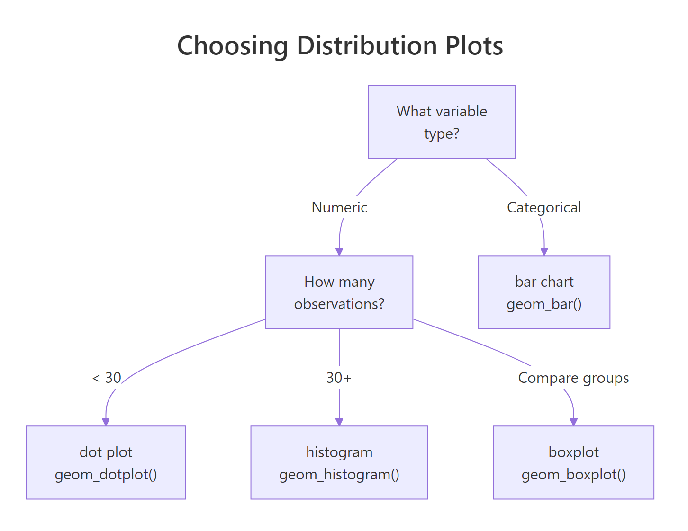
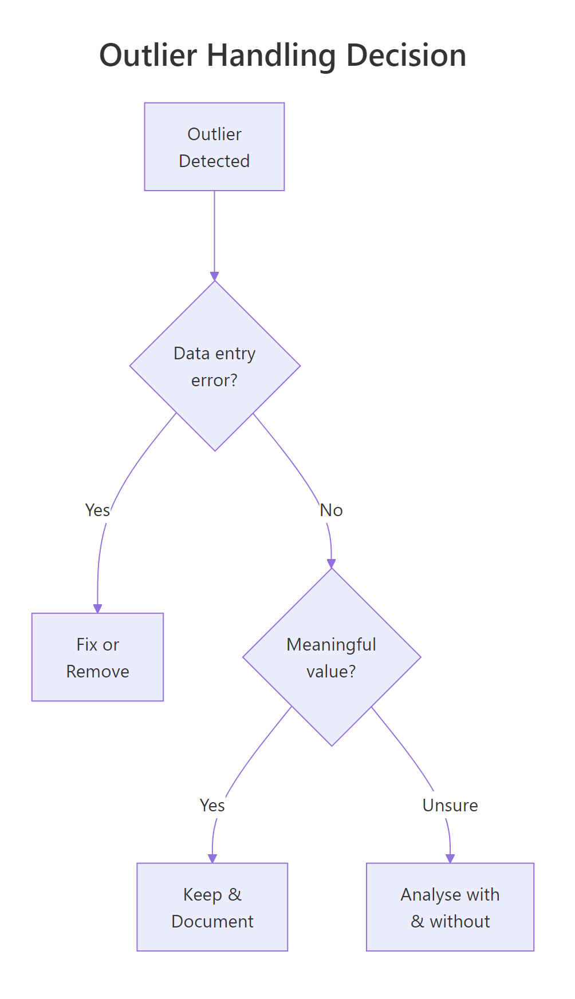
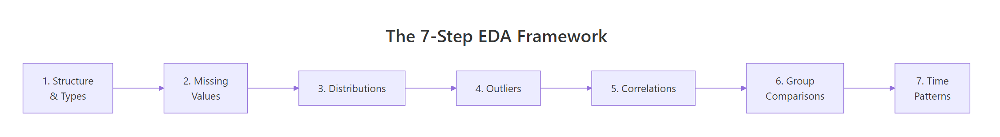

EDA in R: A 7-Step Framework That Works on Every Dataset You'll Encounter
Exploratory Data Analysis (EDA) is the process of examining a dataset before building any model or running any test, you look at structure, spot missing values, check distributions, flag outliers, and uncover relationships so that every downstream decision rests on evidence, not assumptions.
Most tutorials treat EDA as a grab bag of random plots and summary tables. This tutorial gives you a repeatable 7-step framework you can apply to any dataset: structure, missingness, distributions, outliers, correlations, group comparisons, and time patterns. We'll work through every step with R's built-in airquality dataset and the tidyverse.
What Does Your Data Actually Look Like?
Every EDA starts with the same question: what am I working with? Before you plot a single chart or compute a single statistic, you need to know how many rows and columns you have, what type each variable is, and whether R read them in correctly.
Right away you can see three important things. First, the dataset has 153 rows and 6 columns, a manageable size for learning. Second, Ozone and Solar.R already show NA values, which tells you missing data will matter. Third, Month and Day are stored as integers, not as date or factor types, something you might want to fix later.
The str() function gives you a more compact view that emphasises storage types and shows the first few values of each column.
RStructure with str
# Alternative: str() for a compact summarystr(aq)#> 'data.frame': 153 obs. of 6 variables:#> $ Ozone : int 41 36 12 18 NA 28 23 19 8 NA ...#> $ Solar.R: int 190 118 149 313 NA NA 299 99 19 194 ...#> $ Wind : num 7.4 8 12.6 11.5 14.3 14.9 8.6 13.8 20.1 8.6 ...#> $ Temp : int 67 72 74 62 56 66 65 59 61 69 ...#> $ Month : int 5 5 5 5 5 5 5 5 5 5 ...#> $ Day : int 1 2 3 4 5 6 7 8 9 10 ...# Convert Month to a labelled factor for cleaner plots lateraq$Month <-factor(aq$Month, labels =c("May", "Jun", "Jul", "Aug", "Sep"))
Now Month is a factor with readable labels instead of bare integers. This small fix pays off in every plot and summary from here on, ggplot2 will label axes automatically instead of showing "5, 6, 7, 8, 9".
Tip
Prefer glimpse() over str() for wide datasets. When a dataset has dozens of columns, str() prints one line per variable that can scroll off screen. glimpse() fits everything into the console width, making it easier to scan.
Try it: Convert the Day column to a factor too, but this time, keep the numeric labels (1-31). Store the result back in aq$Day and verify with class(aq$Day).
RExercise: convert Day to factor
# Try it: convert Day to factorex_day_result <-class(aq$Day)# your code here# Test:class(aq$Day)#> Expected: "factor"
Explanation: Since Day values are already integers 1-31, you can pass them directly to factor() without specifying labels, R uses the values as labels automatically.
Where Is Your Data Missing, and Does It Matter?
Missing data isn't just an inconvenience, it can silently bias every analysis you run. A correlation computed on only complete cases might overrepresent certain months. A mean calculated after dropping NAs might miss the fact that values are missing because they were extreme. The pattern of missingness matters as much as the amount.
Let's start by counting exactly how many values are missing in each column.
Ozone has 37 missing values, that's 24% of the dataset. Solar.R has 7 (5%). Wind, Temp, Month, and Day are complete. This immediately tells you that any analysis involving Ozone needs to handle missing values carefully.
Next, let's see where those gaps fall. Are they random, or do they cluster in certain months?
RVisualise missing values heatmap
# Visualise which rows have missing valuesmissing_df <-data.frame( row =rep(1:nrow(aq), ncol(aq)), col =rep(names(aq), each =nrow(aq)), is_missing =as.vector(is.na(aq)))ggplot(missing_df |>filter(col %in%c("Ozone", "Solar.R")),aes(x = col, y = row, fill = is_missing)) +geom_tile() +scale_fill_manual(values =c("grey90", "tomato"), labels =c("Present", "Missing")) +labs(title ="Missing Value Pattern", x ="", y ="Row", fill ="") +theme_minimal()#> [A heatmap showing missing values clustered in certain row ranges]
The heatmap reveals that Ozone's missing values aren't perfectly random, there are clusters, especially around rows 25-30 and rows 95-100. This kind of pattern might indicate sensor failures on consecutive days.
RCount complete cases
# How many rows are fully complete?complete_count <-sum(complete.cases(aq))total_rows <-nrow(aq)cat("Complete cases:", complete_count, "out of", total_rows,paste0("(", round(100* complete_count / total_rows, 1), "%)"))#> Complete cases: 111 out of 153 (72.5%)
About 72.5% of rows are complete. If you naively dropped all incomplete rows, you'd lose over a quarter of your data. That's a steep price, especially if the missing data is concentrated in certain months, which would bias your seasonal analysis.
Warning
Dropping all rows with NAs can silently remove 25%+ of your data. Always quantify missingness first with colSums(is.na()) and inspect the pattern before deciding how to handle it. Consider using na.rm = TRUE in calculations or imputation instead of deletion.
Try it: Calculate the percentage of missing Ozone values for each Month. Which month has the most missing data?
RExercise: missingness by month
# Try it: missingness by monthex_missing_by_month <- aq |>group_by(Month) |>summarise(pct_missing =# your code here )ex_missing_by_month#> Expected: a table with 5 rows showing pct_missing per month
Click to reveal solution
RExercise solution: missingness by month
ex_missing_by_month <- aq |>group_by(Month) |>summarise(pct_missing =round(100*mean(is.na(Ozone)), 1))ex_missing_by_month#> # A tibble: 5 x 2#> Month pct_missing#> <fct> <dbl>#> 1 May 16.1#> 2 Jun 33.3#> 3 Jul 16.1#> 4 Aug 16.1#> 5 Sep 3.3
Explanation:mean(is.na(Ozone)) gives the proportion of NAs because is.na() returns TRUE/FALSE, and mean() treats TRUE as 1. June has the most missing Ozone data at 33.3%.
How Are Your Variables Distributed?
Distributions tell you the shape of your data, is it symmetric, skewed, spread out, or concentrated? This matters because many statistical methods assume a particular shape (often a bell curve), and blindly applying them to skewed data gives misleading results.
Let's start with a histogram of Ozone, the variable with the most interesting behaviour.
RStep three: ozone histogram
# Step 3: Distribution of Ozoneggplot(aq, aes(x = Ozone)) +geom_histogram(binwidth =10, fill ="steelblue", colour ="white", na.rm =TRUE) +labs(title ="Distribution of Ozone Levels", x ="Ozone (ppb)", y ="Count") +theme_minimal()#> [A right-skewed histogram with most values between 0-50 and a long right tail]
The histogram shows a clear right skew, most days have low Ozone (under 50 ppb), but some days spike above 100 ppb. This skew means the mean will be pulled higher than the median, and any method assuming normality will be off.

Figure 1: Decision tree for choosing the right distribution plot based on variable type and sample size.
Now let's compare how Temperature is distributed across months. A density plot works well here because it smooths out the histogram bumps and makes overlapping distributions easier to compare.
RDensity by month for temperature
# Temperature distribution by monthggplot(aq, aes(x = Temp, fill = Month)) +geom_density(alpha =0.4) +labs(title ="Temperature Distribution by Month", x ="Temperature (F)", y ="Density") +theme_minimal()#> [Overlapping density curves shifting right from May to August]
The density plot reveals a clear seasonal shift, May's distribution sits around 60-70F, while July and August peak around 80-85F. September's distribution is wider, reflecting the transition from summer to autumn.
The summary() function gives you the five-number summary (min, Q1, median, Q3, max) plus the mean in one call.
RCompute five number summary
# Five-number summary for all numeric columnssummary(aq[, c("Ozone", "Solar.R", "Wind", "Temp")])#> Ozone Solar.R Wind Temp#> Min. : 1.00 Min. : 7.0 Min. : 1.700 Min. :56.00#> 1st Qu.: 18.00 1st Qu.:115.8 1st Qu.: 7.400 1st Qu.:72.00#> Median : 31.50 Median :205.0 Median : 9.700 Median :79.00#> Mean : 42.13 Mean :185.9 Mean : 9.958 Mean :77.88#> 3rd Qu.: 63.25 3rd Qu.:258.8 3rd Qu.:11.500 3rd Qu.:85.00#> Max. :168.00 Max. :334.0 Max. :20.700 Max. :97.00#> NA's :37 NA's :7
Notice how Ozone's mean (42.1) is well above its median (31.5), that confirms the right skew we saw in the histogram. When mean and median diverge like this, always report the median as the "typical" value.
Key Insight
A skewed distribution means the mean and median tell different stories. For right-skewed data like Ozone, the median is a better measure of "typical" because the mean is inflated by extreme values. Always check both before reporting a single number.
Try it: Create a histogram of Solar.R with binwidth = 30. Is the distribution skewed, symmetric, or bimodal?
RExercise: Solar histogram
# Try it: histogram of Solar.Rggplot(aq, aes(x = Solar.R)) +# your code herelabs(title ="Distribution of Solar Radiation", x ="Solar Radiation (Langley)", y ="Count") +theme_minimal()#> Expected: a histogram showing the shape of Solar.R
Click to reveal solution
RExercise solution: Solar histogram
ggplot(aq, aes(x = Solar.R)) +geom_histogram(binwidth =30, fill ="goldenrod", colour ="white", na.rm =TRUE) +labs(title ="Distribution of Solar Radiation", x ="Solar Radiation (Langley)", y ="Count") +theme_minimal()#> [A roughly uniform/slightly left-skewed distribution with values spread across 0-340]
Explanation: Solar.R is roughly uniform with a slight left skew, values are spread fairly evenly across the range, unlike Ozone's strong right skew. This suggests solar radiation doesn't have a single "typical" value.
Which Values Are Outliers, and What Should You Do About Them?
An outlier is a data point that sits far from the rest. It might be a sensor malfunction, a data entry mistake, or a genuinely extreme event (like a heat wave). The important question isn't "is it an outlier?" but "why is it an outlier?", because the answer determines what you do about it.
The boxplot is the classic outlier detection tool. Points beyond the whiskers (1.5 times the interquartile range) are flagged automatically.
RStep four: boxplot outliers
# Step 4: Boxplot to spot outliersggplot(aq, aes(x = Month, y = Ozone, fill = Month)) +geom_boxplot(na.rm =TRUE, show.legend =FALSE) +labs(title ="Ozone Levels by Month", x ="Month", y ="Ozone (ppb)") +theme_minimal()#> [Boxplots showing outlier dots above the whiskers, especially in May and July]
The boxplot shows outlier dots above the whiskers in several months. August has the highest median Ozone, and May has a couple of extreme high values that stand out from an otherwise low-Ozone month.
Let's detect those outliers programmatically using the IQR method.
Only two values (135 and 168 ppb) exceed the upper bound of 131.1. These aren't impossible, real Ozone spikes happen during heat waves. But let's see how much they affect the mean.

Figure 2: Decision flow for handling outliers: fix errors, keep meaningful extremes, or test both ways.
RCompare means with and without outliers
# Compare mean with and without outliersmean_with <-mean(ozone_vals)mean_without <-mean(ozone_vals[ozone_vals <= upper])cat("Mean with outliers: ", round(mean_with, 1), "\n")cat("Mean without outliers:", round(mean_without, 1), "\n")cat("Difference: ", round(mean_with - mean_without, 1))#> Mean with outliers: 42.1#> Mean without outliers: 40.4#> Difference: 1.7
The two outliers shift the mean by only 1.7 ppb, a small effect. In this case, keeping them is reasonable because they represent real atmospheric events, not errors. If the difference were much larger, you'd want to run your downstream analysis both ways and report the sensitivity.
Warning
Never remove outliers just because they're extreme. Remove them because you have a specific reason: a known data entry error, a sensor malfunction, or an impossible value (like negative height). "It's far from the mean" is not a reason.
Try it: Identify outliers in the Wind column using the same IQR method. How many are there?
RExercise: Wind IQR outliers
# Try it: outlier detection for Windex_wind <- aq$Windex_Q1 <-quantile(ex_wind, 0.25)ex_Q3 <-quantile(ex_wind, 0.75)# your code here: compute IQR, bounds, and count outliers#> Expected: number of outliers in Wind
Explanation: Wind has 3 outliers, two unusually calm days (1.7 and 2.3 mph) and one very windy day (20.7 mph). These are extreme but plausible weather events.
Which Variables Are Related to Each Other?
Correlation measures the strength and direction of a linear relationship between two numeric variables. It ranges from -1 (perfect negative, as one goes up, the other goes down) to +1 (perfect positive, they move together). A value near 0 means no linear relationship, but there might still be a curved one.
Three relationships jump out. Ozone and Temp have a strong positive correlation (0.70), hotter days produce more Ozone. Ozone and Wind show a moderate negative correlation (-0.60), windier days have lower Ozone, likely because wind disperses pollutants. Solar.R has a weak positive link to Ozone (0.35), which makes physical sense since sunlight drives Ozone formation.
Let's visualize the strongest relationship with a scatter plot.
RScatter ozone versus temperature
# Scatter plot: Ozone vs Temperatureggplot(aq, aes(x = Temp, y = Ozone)) +geom_point(alpha =0.6, colour ="steelblue", na.rm =TRUE) +geom_smooth(method ="loess", se =TRUE, colour ="tomato", na.rm =TRUE) +labs(title ="Ozone Increases with Temperature", x ="Temperature (F)", y ="Ozone (ppb)") +theme_minimal()#> [Scatter plot showing clear positive trend, with loess curve accelerating above 80F]
The scatter plot confirms the positive relationship, but the loess smoother reveals something the correlation number hides: the relationship isn't perfectly linear. Below 75F, Ozone is relatively flat. Above 80F, it accelerates sharply. This non-linearity means a simple correlation of 0.70 actually understates how strongly temperature drives Ozone on hot days.
A pairs plot gives you every pairwise scatter plot at once, useful for quickly scanning all relationships.
RDraw pairs plot
# Quick overview of all pairwise relationshipspairs(aq[, c("Ozone", "Solar.R", "Wind", "Temp")], pch =19, col =adjustcolor("steelblue", alpha =0.5), main ="Pairwise Scatter Plots")#> [4x4 grid of scatter plots showing all variable pairs]
The pairs plot confirms what we found: Ozone-Temp is the strongest visual pattern, Ozone-Wind shows a clear downward trend, and Solar.R has weaker relationships with everything else.
Key Insight
A low correlation doesn't mean no relationship. Correlation only measures linear association. The Ozone-Temp relationship is partly curved, so the correlation coefficient (0.70) underestimates the true strength. Always plot the scatter and look at the shape, not just the number.
Try it: Create a scatter plot of Ozone vs Wind. Does the relationship look linear? Add a loess smoother to check.
RExercise: Wind and ozone scatter
# Try it: scatter plot of Ozone vs Windggplot(aq, aes(x = Wind, y = Ozone)) +# your code heretheme_minimal()#> Expected: scatter plot showing negative relationship
Click to reveal solution
RExercise solution: Wind ozone scatter
ggplot(aq, aes(x = Wind, y = Ozone)) +geom_point(alpha =0.6, colour ="steelblue", na.rm =TRUE) +geom_smooth(method ="loess", se =TRUE, colour ="tomato", na.rm =TRUE) +labs(title ="Ozone Decreases with Wind Speed", x ="Wind (mph)", y ="Ozone (ppb)") +theme_minimal()#> [Scatter plot showing a clear negative, slightly curved relationship]
Explanation: The relationship is negative and somewhat curved, Ozone drops steeply as Wind increases from 5 to 12 mph, then levels off. Wind disperses ground-level Ozone, and once it's strong enough, additional wind has diminishing effect.
How Do Groups Differ Across Your Variables?
Grouping reveals structure that global summaries hide. A variable that looks well-behaved overall might behave completely differently in subgroups. In the airquality data, Month is the natural grouping variable, summer months behave differently from spring and autumn.
July and August have Ozone levels roughly double those of May and September. The standard deviation is also much higher in summer, not only is Ozone worse on average, but it's more unpredictable. September drops back down, roughly matching June despite higher temperatures. This suggests temperature alone doesn't explain Ozone patterns.
Side-by-side boxplots make these group differences visually immediate.
RTemperature boxplots by month
# Boxplots of Temperature by Monthggplot(aq, aes(x = Month, y = Temp, fill = Month)) +geom_boxplot(show.legend =FALSE) +labs(title ="Temperature by Month", x ="Month", y ="Temperature (F)") +theme_minimal()#> [Five boxplots showing steady rise from May to August, slight drop in Sep]
The boxplot reveals a clear seasonal arc, temperatures climb steadily from May through August, then drop slightly in September. The spread (box height) is similar across months, meaning temperature variability is roughly constant regardless of season.
Faceted histograms let you compare the shape of distributions across groups, not just their centres.
RFacet ozone histograms by month
# Faceted histograms: Ozone distribution by monthggplot(aq, aes(x = Ozone, fill = Month)) +geom_histogram(binwidth =15, colour ="white", show.legend =FALSE, na.rm =TRUE) +facet_wrap(~Month, ncol =5) +labs(title ="Ozone Distribution Varies Dramatically by Month", x ="Ozone (ppb)", y ="Count") +theme_minimal()#> [Five small histograms: May/Jun right-skewed near 0, Jul/Aug spread wide, Sep back low]
The faceted view reveals something the grouped summary didn't make obvious: May and June have most values near zero with a few spikes, while July and August are spread across a much wider range. The shape of the distribution changes across months, not just the centre.
Tip
Use facet_wrap() to compare distributions side by side. Overlapping density plots on one axis get messy with more than 3 groups. Facets give each group its own panel, making shape differences immediately visible.
Try it: Compute the median Wind speed for each Month using group_by() and summarise(). Which month is windiest?
RExercise: median Wind by month
# Try it: median wind by monthex_wind_summary <- aq |>group_by(Month) |>summarise(median_wind =# your code here )ex_wind_summary#> Expected: 5 rows, one per month, with median wind speed
Click to reveal solution
RExercise solution: median Wind by month
ex_wind_summary <- aq |>group_by(Month) |>summarise(median_wind =median(Wind))ex_wind_summary#> # A tibble: 5 x 2#> Month median_wind#> <fct> <dbl>#> 1 May 11.5#> 2 Jun 9.7#> 3 Jul 8.6#> 4 Aug 8.6#> 5 Sep 10.3
Explanation: May is the windiest month (median 11.5 mph) and July/August are the calmest (8.6 mph). This makes physical sense, spring tends to be windier, and still summer air traps more pollutants (which also explains the high Ozone in summer).
Are There Patterns Over Time?
If your data has a time dimension, trends and seasonality can dominate everything else. Two variables might look correlated, but the real story is that both are simply rising (or falling) over time. The airquality dataset spans May through September 1973, giving us a clear temporal axis.
Let's construct a proper date column and plot Ozone over time.
RStep seven: ozone over time
# Step 7: Create date and plot Ozone over timeaq$Date <-as.Date(paste("1973", as.numeric(aq$Month) +4, aq$Day, sep ="-"))ggplot(aq, aes(x = Date, y = Ozone)) +geom_line(colour ="steelblue", na.rm =TRUE) +geom_point(size =1, colour ="steelblue", na.rm =TRUE) +labs(title ="Ozone Over Time (May-Sep 1973)", x ="Date", y ="Ozone (ppb)") +theme_minimal()#> [Line chart showing irregular Ozone with peak values in Jul-Aug]
The time series shows high day-to-day variability, but a clear seasonal envelope, Ozone peaks in July and August, then drops in September. The gaps in the line correspond to the missing values we identified in Step 2.
Adding a smoothed trend line makes the seasonal pattern easier to see.
RTemperature smoothed over time
# Temperature over time with trendggplot(aq, aes(x = Date, y = Temp)) +geom_point(alpha =0.5, colour ="grey50") +geom_smooth(method ="loess", span =0.4, colour ="tomato", se =TRUE) +labs(title ="Temperature Trend (May-Sep 1973)", x ="Date", y ="Temperature (F)") +theme_minimal()#> [Scatter with smooth curve peaking around late July]
Temperature follows a smooth seasonal arc, rising steadily from May through late July, plateauing in August, then declining in September. Compare this shape to the Ozone time series above: they move together, confirming the strong positive correlation we found in Step 5.
To compare multiple variables on the same time scale, reshape the data and facet.
RMulti panel time series
# Multi-panel time serieslibrary(tidyr)aq_long <- aq |>select(Date, Ozone, Temp, Wind) |>pivot_longer(cols =c(Ozone, Temp, Wind), names_to ="Variable", values_to ="Value")ggplot(aq_long, aes(x = Date, y = Value)) +geom_line(colour ="steelblue", na.rm =TRUE) +facet_wrap(~Variable, scales ="free_y", ncol =1) +labs(title ="Three Variables Over Time", x ="Date", y ="") +theme_minimal()#> [Three stacked panels: Ozone (spiky, peaks Jul-Aug), Temp (smooth arc), Wind (no clear trend)]
The multi-panel view delivers the final insight: Ozone and Temperature share a seasonal pattern (both peak mid-summer), but Wind shows no clear seasonal trend, it's variable throughout the entire period. This tells you that Wind's negative correlation with Ozone is driven by day-to-day weather, not seasonal cycles.
Note
Not every dataset has a time dimension. If yours doesn't, skip this step entirely. The 7-step framework is a checklist, use the steps that apply and skip the ones that don't. A cross-sectional survey has no Step 7, and that's fine.
Try it: Plot Wind speed over time as a line chart. Is there a seasonal pattern, or is Wind more random day-to-day?
RExercise: Wind over time
# Try it: Wind over timeggplot(aq, aes(x = Date, y = Wind)) +# your code heretheme_minimal()#> Expected: line chart of Wind over time
Click to reveal solution
RExercise solution: Wind over time
ggplot(aq, aes(x = Date, y = Wind)) +geom_line(colour ="steelblue") +geom_smooth(method ="loess", span =0.4, colour ="tomato", se =TRUE) +labs(title ="Wind Speed Over Time", x ="Date", y ="Wind (mph)") +theme_minimal()#> [Line chart showing no clear seasonal pattern, Wind varies randomly around ~10 mph]
Explanation: Unlike Ozone and Temperature, Wind has no clear seasonal trend. The loess curve stays roughly flat around 10 mph. This confirms that Wind operates on a day-to-day weather cycle rather than a seasonal one.
Practice Exercises
Exercise 1: Run the first 3 steps on mtcars
Apply Steps 1-3 of the EDA framework to the mtcars dataset: examine its structure with glimpse(), check for missing values with colSums(is.na()), and create a histogram of mpg. Write one sentence summarising each finding.
RExercise one: mtcars steps one to three
# Exercise 1: EDA on mtcars (Steps 1-3)# Step 1: structure# Step 2: missing values# Step 3: distribution of mpg# Hint: mtcars is built-in, just type mtcars
Click to reveal solution
RExercise one solution: mtcars steps
# Step 1: Structureglimpse(mtcars)#> Rows: 32#> Columns: 11#> $ mpg <dbl> 21.0, 21.0, 22.8, ...# Step 2: Missing valuescolSums(is.na(mtcars))#> mpg cyl disp hp drat wt qsec vs am gear carb#> 0 0 0 0 0 0 0 0 0 0 0# Step 3: Distributionggplot(mtcars, aes(x = mpg)) +geom_histogram(binwidth =3, fill ="steelblue", colour ="white") +labs(title ="MPG Distribution", x ="Miles per Gallon", y ="Count") +theme_minimal()#> [Right-skewed histogram with most cars between 15-25 mpg]
Findings: (1) mtcars has 32 rows and 11 columns, all numeric. (2) There are zero missing values, unusual for real data. (3) MPG is right-skewed with most cars clustered between 15-25 mpg and a few fuel-efficient outliers above 30.
Exercise 2: Build an EDA summary function
Create a function eda_summary() that takes a numeric vector, handles NAs, and returns a named list with: mean, median, sd, n_missing, n_outliers (IQR method), and skewness direction ("left", "symmetric", or "right" based on whether mean < median, mean ≈ median, or mean > median). Test it on every numeric column in airquality.
RExercise two: eda summary function
# Exercise 2: eda_summary() functioneda_summary <-function(x) {# your code here# Return a named list with: mean, median, sd, n_missing, n_outliers, skew_direction}# Test on all numeric columns:# lapply(aq[, c("Ozone", "Solar.R", "Wind", "Temp")], eda_summary)
Explanation: The function extracts clean values (no NAs), computes descriptive stats, counts IQR-based outliers, and infers skew direction by comparing the mean-median gap to the standard deviation. Ozone shows right skew (mean > median) with 37 missing values and 2 outliers.
Exercise 3: Mini EDA report on iris
Build a mini EDA report for the iris dataset: (1) structure check with glimpse(), (2) faceted histogram of Sepal.Length by Species, (3) correlation matrix of all four numeric columns, and (4) a grouped summary table with mean and sd of all numeric columns by Species.
RExercise three: iris mini report
# Exercise 3: Mini EDA report on iris# Part 1: glimpse()# Part 2: faceted histogram# Part 3: correlation matrix# Part 4: grouped summary# Hint: use across(where(is.numeric), ...) inside summarise()
Explanation: The mini report reveals that iris species differ substantially in size (setosa is smallest), petal dimensions are very highly correlated (0.96), and Sepal.Width is negatively correlated with petal measurements, a classic ecological pattern where wider sepals accompany smaller petals.
Putting It All Together
Let's run all 7 steps in a single cohesive analysis of airquality, producing a written summary at the end. This mirrors what a real EDA section of a report looks like.
Here's the written summary that would go into a report:
The airquality dataset contains 153 daily observations of 6 variables from May-September 1973 in New York. Ozone has substantial missing data (24%), concentrated in June (33%). Ozone is right-skewed with 2 IQR outliers (135 and 168 ppb). Temperature and Ozone are strongly correlated (r = 0.70) with a non-linear acceleration above 80F. Wind is negatively correlated with Ozone (r = -0.60). Monthly grouping reveals summer peaks in Ozone (July-August, ~60 ppb) coinciding with the temperature peak, while Wind shows no seasonal pattern. Any model of Ozone should include Temperature and Wind as predictors and account for the non-linear temperature effect.
Summary

Figure 3: The complete 7-step EDA framework as a sequential pipeline.
The framework is a checklist, not a strict sequence. Skip Step 7 if there's no time dimension. Spend extra time on whichever step reveals the most interesting patterns. The goal is to build intuition about your data before you commit to any model or test.
References
Tukey, J.W., Exploratory Data Analysis. Addison-Wesley (1977). The foundational text that introduced EDA as a discipline.
Wickham, H. & Grolemund, G., R for Data Science (2e), Chapter 10: Exploratory Data Analysis. Link
R Core Team, airquality dataset documentation. Link
Wickham, H., ggplot2: Elegant Graphics for Data Analysis (3e). Springer (2024). Link
dplyr documentation, group_by() and summarise(). Link
NIST/SEMATECH, e-Handbook of Statistical Methods: Exploratory Data Analysis. Link
Grolemund, G., Hands-On Programming with R. O'Reilly (2014). Link
Continue Learning
Automated EDA in R, Packages that generate EDA reports automatically, so you can compare hand-coded EDA with automated output.